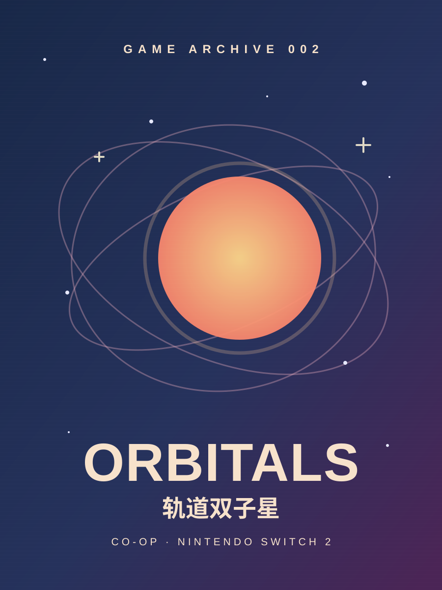

GAME 002 · COMPLETED
轨道双子星
ORBITALS
双人合作通关 · 双人回忆：💯 / 💯
“游戏本身 7 分，对象玩得开心，加满 💯！”
我的评分
我的通关感受
国庆假期的 10 月 1 日到 2 日，和对象一起花了大约 8 个小时通关了《轨道双子星》。
整体玩下来，我觉得这是一款很有特色，但也有些意犹未尽的双人合作游戏。
最值得称赞的，首先是它的美术风格。这种上世纪的复古视觉气质独此一家，辨识度相当高，而且游戏过程中的每一帧截出来都像是动画片的一部分。单凭这一点，我就愿意给它加上一分。
其次是关卡设计。虽然并非每个关卡都能带来惊喜，但其中确实有一些相当出乎意料的创意。尤其是那些没有提前预料到的玩法变化。
双人合作本身也很加分。两个人一起研究机关、尝试解谜，思路能够对上的时候，整个过程会相当有趣。
当然，解谜体验也很吃两个人的脑电波能不能对上。顺利的时候自然很有成就感，但这种乐趣本身还不足以让我额外加分，所以最终记作 +0。
此外，游戏提供了中文配音，一些隐藏的彩蛋和场景交互也做得挺有趣。这些小细节让整个游玩过程多了不少轻松感。
作为一款NS2独占作品，虽然我认为不会有人专门为这款游戏入手这个平台，但多一些独占内容总归是好事，至少能让我觉得买这款主机物有所值。
剧情：有点太白开水了
相比美术和关卡创意，剧情就显得平淡不少。
前期的叙事多少有些云里雾里，玩的时候不太容易弄清楚它究竟想讲什么。
而到了需要推进剧情、制造转折的环节，叙事处理又偏生硬。部分情节缺乏足够自然的铺垫，转折来得过于突兀，很难让玩家代入对应的情绪。此外，最终大决战也有些潦草，当读者终于理顺脉络进入剧情状态时，短短一段对决过后，整个故事就已经走到了结局。
整体故事给我的感觉还是偏平淡寡味，缺少真正能让人留下深刻印象的剧情高潮。
八小时通关，多少有些意犹未尽
从 10 月 1 日开始，到 10 月 2 日结束，整个流程大约花了 8 个小时。
对于一款双人合作游戏来说，这个长度确实很容易安排。两个人趁着假期，花上一两天就能从头到尾完整体验一遍。
但这次我反而觉得流程有些太短了。
游戏明明已经展现出了相当有趣的创意，部分关卡的设计也足够让人眼前一亮，可还没来得及充分展开，整个旅程就结束了。
尤其是关卡数量偏少，让我觉得这套美术风格和玩法创意还有不少可以继续发挥的空间。
所以这次，流程短、关卡少，扣 1 分。
最后留下的印象
《轨道双子星》最吸引我的，是独特的美术风格、部分令人惊喜的关卡，以及双人合作过程中产生的乐趣。
剧情平淡、转折生硬和流程偏短确实拉低了我的整体评价，但这些也没有妨碍我享受这段假期里的双人游戏时光。
最终，按照自己的加减分体系，基础 6 分，加上各项优缺点后，游戏本身得到了 7 / 10。
不过这次和小曼玩得很开心。
那就没什么好好说的了。
游戏评分：11 / 10。
2026.10.02，双人通关。